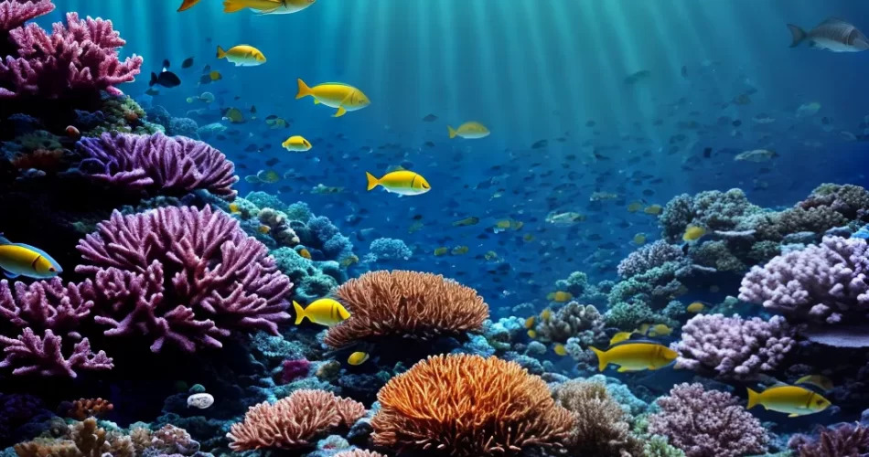
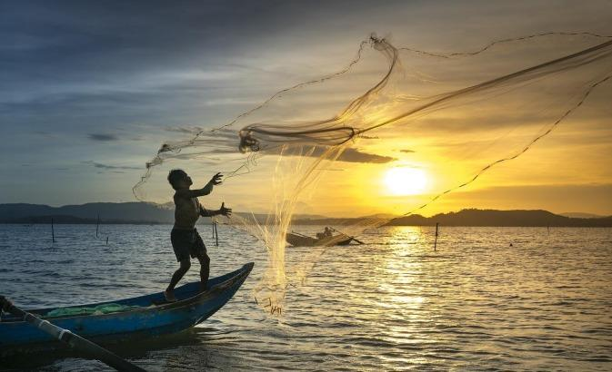
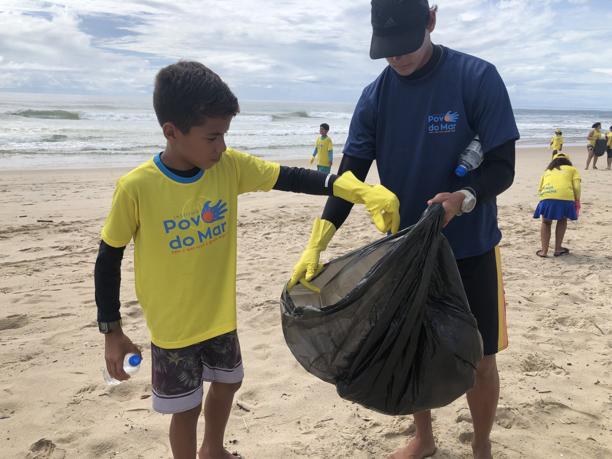

Proteger a vida marinha é fundamental
Cuidar da vida marinha é fundamental para manter o equilíbrio dos ecossistemas, regular o clima global e garantir a segurança alimentar e os benefícios econômicos de milhões de pessoas que dependem dos oceanos. Além de fornecer oxigênio e proteger as costas de tempestades, os oceanos são essenciais para a biodiversidade e sustentam atividades como a pesca e o turismo. No entanto, a poluição, a sobrepesca e as mudanças climáticas ameaçam esses recursos, colocando em risco tanto o meio ambiente quanto as comunidades humanas. Proteger a vida marinha é, portanto, uma responsabilidade urgente para garantir um futuro sustentável para o planeta e as próximas gerações.
Como a deterioração do ambiente marinho pode afetar as comunidades locais
Um ambiente marinho deteriorado pode afetar profundamente as comunidades locais, especialmente as costeiras, que dependem dos oceanos para alimentação e economia. A destruição de recifes de corais, a sobrepesca e a poluição reduzem os recursos pesqueiros, prejudicando a segurança alimentar e as fontes de renda, como a pesca e o turismo. Além disso, a perda de ecossistemas marinhos, como manguezais e recifes, aumenta a vulnerabilidade dessas comunidades a desastres naturais, como tempestades e tsunamis, pois esses ecossistemas atuam como uma proteção natural contra esses eventos. Assim, a degradação marinha compromete tanto a economia local quanto a segurança das pessoas, tornando-as mais expostas a riscos.
Os oceanos enfrentam diversos impactos negativos
Atualmente, os oceanos enfrentam vários impactos negativos causados principalmente pela atividade humana, como a poluição plástica, a sobrepesca, a acidificação das águas e o aquecimento global. A poluição plástica está matando e prejudicando espécies marinhas, enquanto a sobrepesca ameaça a biodiversidade e os ecossistemas marinhos. O aumento da temperatura da água, decorrente das mudanças climáticas, está afetando recifes de corais e alterando padrões migratórios de várias espécies. Além disso, a acidificação dos oceanos, causada pela maior absorção de CO2, compromete a vida marinha, especialmente organismos que dependem do cálcio para formar suas conchas e esqueletos. Esses problemas estão colocando em risco a saúde dos oceanos e os serviços essenciais que eles prestam ao planeta e à humanidade.

Formas de reduzir os impactos negativos sobre a vida marinha
Para diminuir o impacto negativo à vida marinha, é fundamental adotar práticas sustentáveis como a pesca responsável, evitando a sobrepesca e promovendo a recuperação de espécies. A redução da poluição plástica pode ser alcançada por meio da reciclagem, redução de descartáveis e limpeza dos oceanos. É importante também proteger áreas marinhas sensíveis, como recifes de corais e manguezais, estabelecendo reservas e promovendo sua recuperação. Combater as mudanças climáticas, com a redução de emissões de gases de efeito estufa, também é essencial para mitigar o aquecimento e a acidificação dos oceanos. A conscientização pública e políticas governamentais eficazes são cruciais para garantir a preservação dos ecossistemas marinhos.
